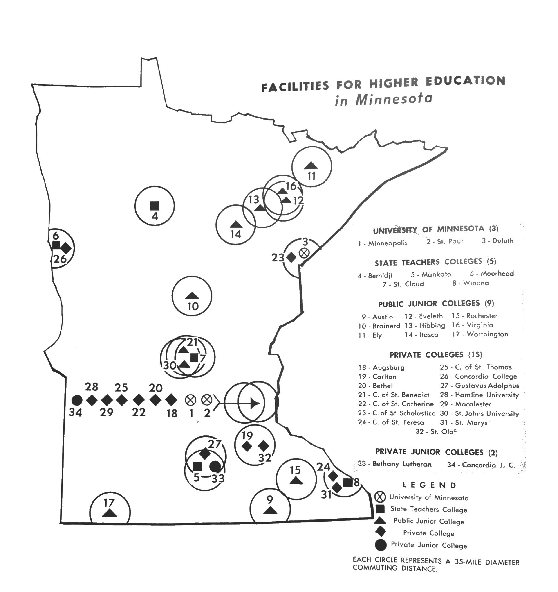
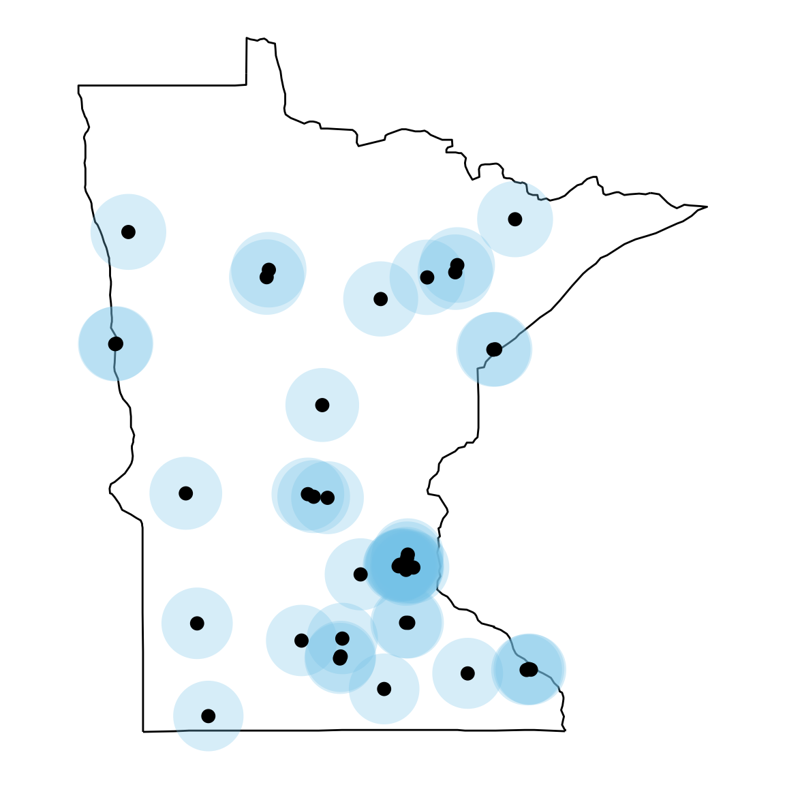
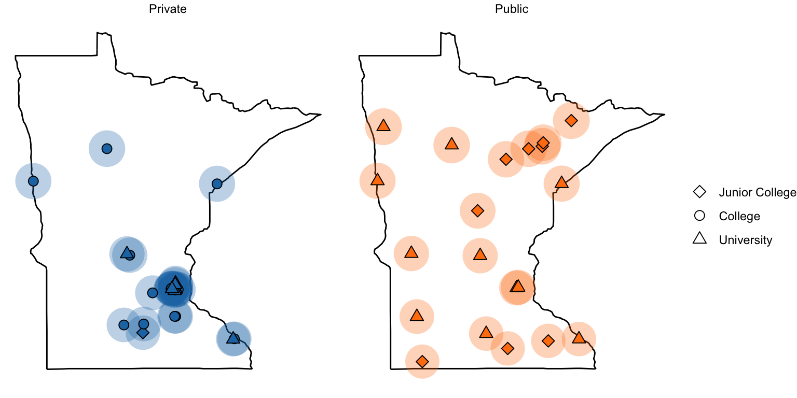
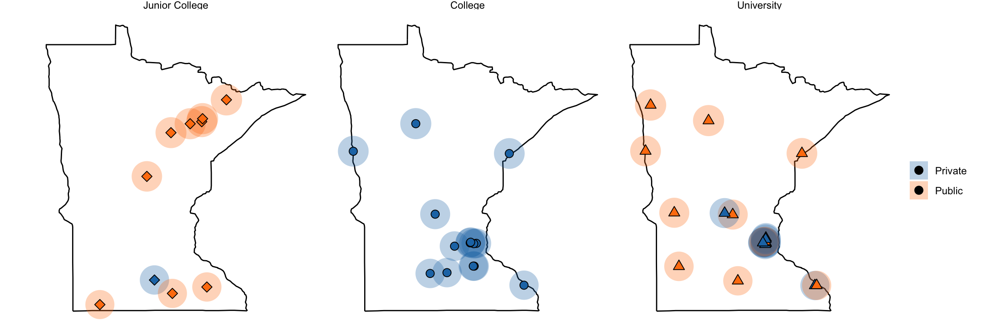

./assets/body-header.qmd
I was recently perusing a book from 1960, Minnesota Heritage: A Panoramic Narrative of the Historical Development of the North Star State and came across the following map showing the locations of the colleges and universities in the state at the time.
The text referring to the map made an inference about the accessibility to higher education,
At a glance the map shows, these facilities for higher education are quite uneveny distributed. Fourteen institutions, including four public junior colleges and the University, with its major campuses at Minneapolis, St. Paul, and Duluth, are concentrated in Hennepin, Ramsey, and St. Lousi counties, all in the eastern half of the state. The eighteen remaining colleges are scattered among twelve counties. The entire western half of the state has only four colleges, two in the same city.
I wondered if that distribution had changed since 1960, so I collected the 2018 location data on colleges and universities in Minnesota. This is available as a CSV file here. I then used ggplot() to create a map of these locations.
library(dplyr)
library(geosphere)
library(ggplot2)
library(ggmap)
library(ggrepel)
library(ggthemes)
library(readr)
# Read in college data
colleges = read_csv("https://raw.githubusercontent.com/zief0002/Public-Stuff/master/data/mn-colleges-geo.csv")
head(colleges)# A tibble: 6 × 6
name type level city lat long
<chr> <chr> <chr> <chr> <dbl> <dbl>
1 Augsburg University Private University Minneapolis 45.0 -93.2
2 Bemidji State University Public University Bemidji 47.5 -94.9
3 Bethany Lutheran College Private Junior College Mankato 44.2 -94.0
4 Bethel University Private University Saint Paul 45.1 -93.2
5 Carleton College Private College Northfield 44.5 -93.2
6 Central Lakes College Public Junior College Brainerd 46.3 -94.2# Reorder the institution level
colleges = colleges %>%
mutate(
level = factor(level, levels = c("Junior College", "College", "University"))
)To mimic the 35-mile circles on the map I adapted code from https://egallic.fr/en/maps-with-r/.
# --
# Given the long/lat coordinates of an origin (x) and a radius (radius) in km,
# returns the coordinates of 360 points on the circle of center x and radius radius km.
# --
# x (numeric vector) : coordinates of the origin of the circle
# radius (numeric) : radius of the circle
# http://egallic.fr/en/maps-with-r/
# --
distantCircle = function(x, radius) {
# Creation de 360 points distincts sur le cercle de centre
# x et de rayon radius
resul = do.call("rbind", lapply(0:360, function(bearing) {
res = destPoint(p = x, b = bearing, d = radius)
rownames(res) = NULL
return(data.frame(res))
}))
resul$dist = radius / 1000
return(resul)
}
# Store circle data along with college for easier filtering
n = nrow(colleges)
circles = list(NA, n)
for(i in 1:n){
circles[[i]] = data.frame(
distantCircle(x = c(colleges$long[i], colleges$lat[i]), radius = 35*1000)
)
circles[[i]]$name = colleges$name[i]
}
circles = do.call(rbind, circles)
circles = circles %>%
left_join(colleges[c(1, 2, 3)], by = "name")Finally, I created the map.
# Get MN map info
mn = map_data("state", region = "Minnesota")
## Plot map
ggplot(data = mn, aes(x = long, y = lat)) +
geom_polygon(aes(group = group), fill = "white", color = "black") +
geom_polygon(data = circles, aes(x = lon, y = lat, group = name), linetype = 1,
fill = "skyblue", alpha = 0.3) +
geom_point(data = colleges, size = 3) +
theme_void() +
coord_map(projection = "mercator") +
scale_shape_manual(name = "", values = c(18, 16, 17, 15, 13))
The original map also indicated the type of college and whether it was publicly or privately funded.
ggplot(data = mn, aes(x = long, y = lat)) +
geom_polygon(aes(group = group), fill = "white", color = "black") +
geom_polygon(data = circles, aes(x = lon, y = lat, group = name, fill = type),
linetype = 1, alpha = 0.3) +
geom_point(data = colleges, aes(shape = level, fill = type), size = 3) +
theme_void() +
coord_map(projection = "mercator") +
scale_shape_manual(name = "", values = c(23, 21, 24)) +
ggsci::scale_fill_d3(name = "") +
facet_wrap(~type) +
guides(fill = FALSE)Warning: The `<scale>` argument of `guides()` cannot be `FALSE`. Use "none" instead as
of ggplot2 3.3.4.
Here is another variation of the map facetting on level.
ggplot(data = mn, aes(x = long, y = lat)) +
geom_polygon(aes(group = group), fill = "white", color = "black") +
geom_polygon(data = circles, aes(x = lon, y = lat, group = name, fill = type),
linetype = 1, alpha = 0.3) +
geom_point(data = colleges, aes(shape = level, fill = type), size = 3) +
theme_void() +
coord_map(projection = "mercator") +
scale_shape_manual(name = "", values = c(23, 21, 24)) +
ggsci::scale_fill_d3(name = "") +
facet_wrap(~level) +
guides(shape = FALSE, color = FALSE)
While the locations are still typically clustered on the eastern half of the state, there are several more options on the western side of the state in 2018. This is likely due to the population density of the state (see below). Moreover there are public options throughout the state.